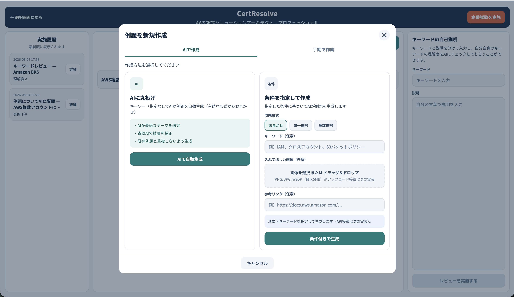
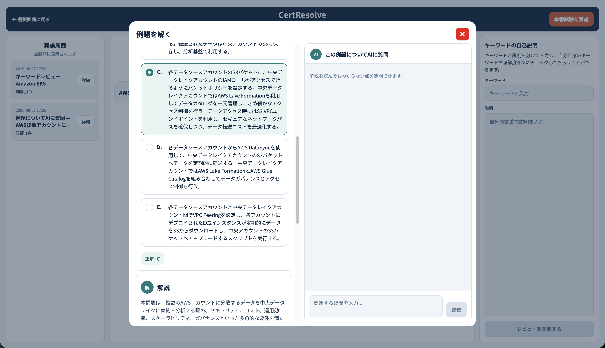

1
学びたい資格を登録する
資格名を追加し、一覧から選んで勉強を始めます。 補足：しばらく使わない資格は「アーカイブ」にしまっておけます（消えるのではなく、あとで戻せます）。

画面イメージ①｜資格の登録・選択
卒業制作｜ツール概要
画面はすべて「こう使う想定」のイメージです。レイアウトは今後変わることがあります。
ひとことで言うと
学びたい資格を登録し、例題づくり・質問・単語の理解確認・模擬試験までを、ひとつの道具の中で続けられる勉強ツールです。
別々のアプリやノートを行き来せず、同じ場所で一貫して続けられます。
ただ試験に受かるためだけでなく、取得後に現場で判断できるようになることを意識しています。
まず資格を登録してメイン画面を開き、そこで例題・質問・単語チェック・模擬試験を行います。やったことは履歴で見返せます。
学びたい資格を追加して選ぶ
編集・削除もできる
解説で足りない疑問を聞く
自分の説明をAIが評価
本番に近い形で受ける
資格名を追加し、一覧から選んで勉強を始めます。 補足：しばらく使わない資格は「アーカイブ」にしまっておけます（消えるのではなく、あとで戻せます）。
AIに任せて作ることも、キーワード・画像・参考リンクなどの条件を付けて作ることもできます。 例題が10問以上たまると、ランダムに10〜25問を連続で解くこともできます。

問題・解説の横で、その例題についての疑問を追加で聞けます。解説に書いていない関連の疑問にも答えられます。

単語とその説明をテキストで送り、AIに内容を評価してもらいます。暗記だけでなく、実務で使える理解かを見るための機能です。

メイン画面から、本番に近い形の試験に取り組めます。
資格を選んだあとの「司令室」です。左に履歴、中央に例題、右に単語チェック、右上に模擬試験、という配置のイメージです。
過去の取り組みを新しい順に確認。詳細も開けます。
作成・編集・削除、単独で解く、まとめて解く。
理解度チェック（④）。実務を見据えた確認。
右上 「本番試験を実施」から⑤の模擬試験へ。

「いつ・何をして・どうだったか」をあとから振り返れるようにします。